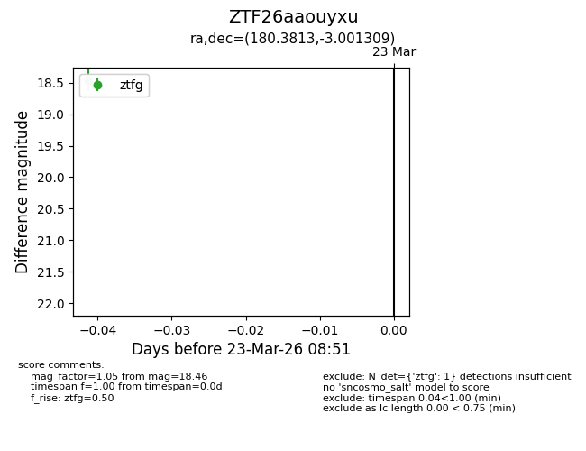
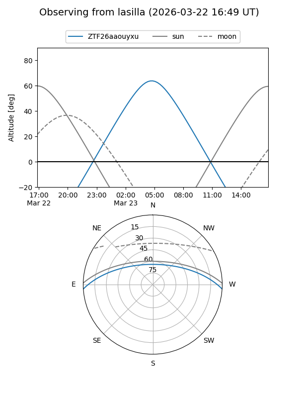
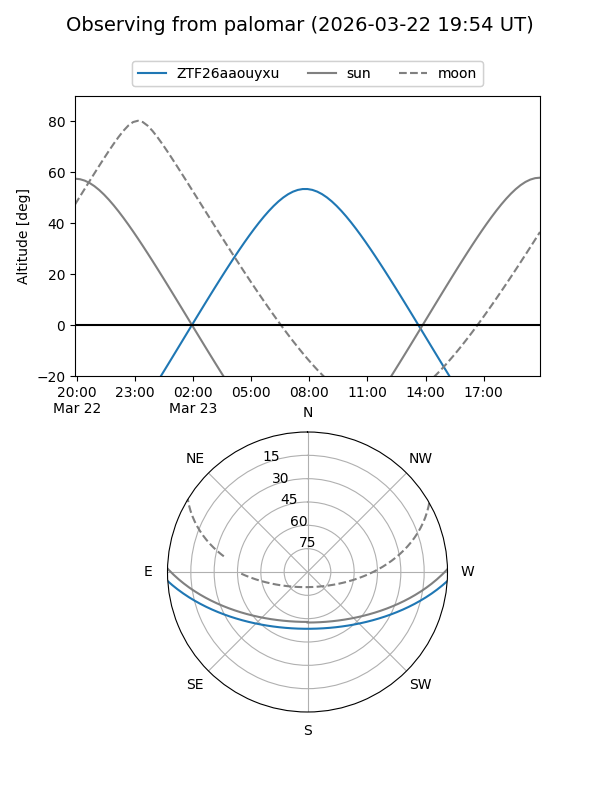

ZTF26aaouyxu
Target ZTF26aaouyxu at 2026-03-23 08:53
Aliases and brokers:
FINK: link
Lasair: link
ALeRCE: link
alt names
ZTF26aaouyxu (ztf,fink_ztf)
Coordinates:
equatorial (ra, dec) = 180.3813,-3.00131
equatorial (HMS+DMS) = 12:01:31.50,-03:00:04.71
galactic (l, b) = (279.2172,+57.55409)
Flags:
Photometry:
last ztfg=18.46
1 ztfg detections
Lightcurve

Visibility


Additional plots